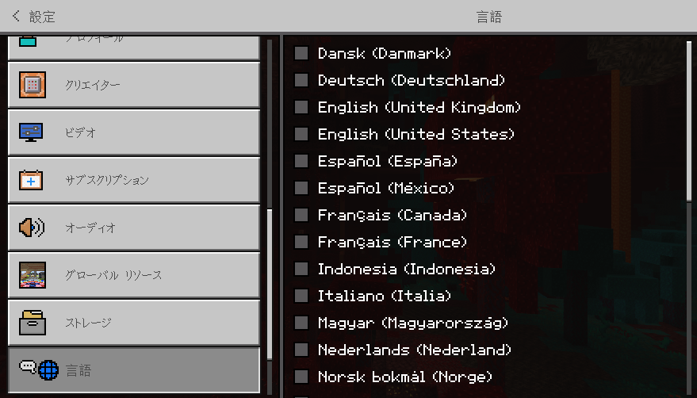
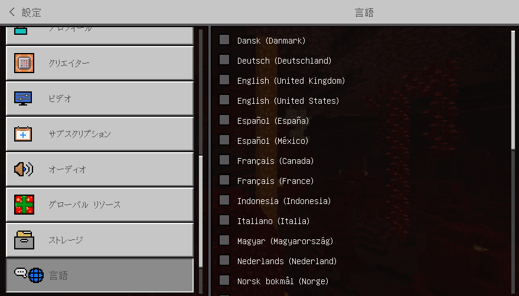

Unicodeフォント化
フォントをUnicodeフォント化します
言語 日本語がおすすめです!
フォントをUnicodeフォント化します
言語 日本語がおすすめです!
マイクラ統合版でUnicodeフォントを強制化します！
言語が日本語になっていてもスムースフォントではなくUnicodeフォントで表示されるのが特徴です！！
スプラッシュテキストや、ネームタグ、インベントリのアイテム名など、一部のテキストでは、
半角英数字記号しかない文で§l (太字)が使われると、二重になって表示されてしまうのでご注意下さい。
また、言語が日本語 (ja_JP)になってない場合、スプラッシュテキストなどに限らず、すべてのテキストにおいて、
半角英数字記号しかない文で§l (太字)が使われると、二重になって表示されてしまいます。
マイクラの設定の言語から日本語にするだけでも、スムースフォントではなくUnicodeフォントになります！
言語ファイルは一切いじっていないためアドオンとの互換性も100%あります！
グローバルリソースに設定したら、かならずマイクラの再起動をして下さい！
ビフォー

アフター

ダウンロード
ここから最新の「Unicodeフォント化」をダウンロードできます！